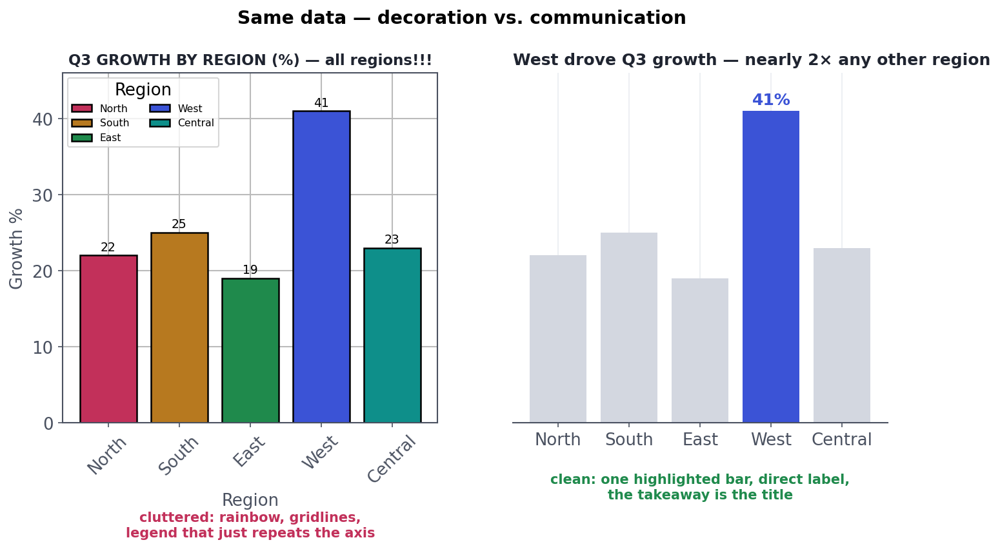

The Stakeholder-Ready Deck
From notebook to a deck an exec acts on.
A chart has one job: deliver a single message to a reader's brain, fast. Most charts fail at it — not because the data is wrong, but because decoration, clutter, and rainbow colours bury the point. The good news: making charts that communicate is mostly subtraction, and a handful of principles will put you ahead of almost everyone. This is data visualization for persuasion, which is a different craft from the exploratory plotting in the EDA track.
A tiny decision treeMatch the chart to the message
Chart choice is mostly about what relationship you're showing — and a few defaults cover the vast majority of cases:
- Comparison across categories → bar chart (the honest workhorse; start the axis at zero).
- Trend over time → line chart.
- Relationship between two variables → scatter plot.
- Composition (parts of a whole) → a stacked bar — and usually not a pie (humans compare lengths far better than angles; pies fail past 2–3 slices).
When in doubt, a plain bar or line almost always beats something fancier. Exotic chart types impress the maker and confuse the reader.
The power of subtractionDecoration vs. communication
The single biggest upgrade to most charts is removing things. Every non-data pixel — heavy gridlines, 3D effects, drop shadows, a rainbow of colours, a redundant legend — is "chartjunk" that competes with your message. Compare the same data told two ways:

The decluttering checklist: remove gridlines and borders you don't need; kill 3D and shadows always; grey out everything and highlight only what carries the message (colour is your most powerful tool — spend it on the one thing you want seen); label directly instead of forcing eyes to a legend; and make the title the takeaway, not the topic. Each of these is subtraction or redirection — you're removing noise so the signal lands.
The "grey everything, highlight one" trick is the fastest way to make any chart communicate. Our eyes jump to the one saturated element among muted ones, so a single coloured bar (or line) in a field of grey pre-attentively tells the reader where to look before they've consciously read anything. Colour should mean "pay attention here" — never "I had five categories so I used five colours."
Don't mislead, even accidentallyHonesty in charts
Charts can lie without anyone intending it. The classic offenders: a truncated y-axis on a bar chart that turns a 2% difference into a visual landslide (bars must start at zero); inconsistent scales across compared charts; cherry-picked time windows that manufacture a trend; and dual axes rigged to imply a correlation. Your credibility is your most valuable asset — a chart that technically shows the data but misleads the eye will eventually be caught, and it takes your trustworthiness down with it. Design for the honest impression, not just the technically-defensible one.
★ Key points to remember
- A chart's job is one message, fast — persuasion visuals differ from exploratory ones.
- Match type to relationship: bar (comparison), line (trend), scatter (relationship), stacked bar (composition) — usually not a pie.
- The biggest upgrade is subtraction: remove chartjunk (gridlines, 3D, shadows, rainbow, redundant legends).
- Grey everything, highlight the one thing that carries the message; label directly; make the title the takeaway.
- Be honest: bars start at zero, consistent scales, no cherry-picked windows — a misleading chart costs your credibility.
◆ Practice▸
Show solution & reasoning
Problems & fixes: (1) Truncated y-axis (4,800–5,000) — visually inflates a ~4% change into a cliff; fix: start the axis at zero so the real magnitude shows (if the small change is genuinely the story, use a line chart or annotate the % change honestly). (2) Rainbow bars — colour with no meaning adds noise; fix: make all bars a single neutral colour and highlight only the month that matters. (3) Heavy gridlines — chartjunk competing with the data; fix: remove or lighten them to faint references. (4) Likely a topic title — fix: retitle with the takeaway ("Signups flat for 6 months — growth has stalled"). Bonus: label the key value directly instead of relying on axis reading. The theme: subtract noise, tell the truth about magnitude, and put the message in the title.
Show solution & reasoning
A table wins when the audience needs to look up or compare precise values, when there are few numbers that each matter exactly, or when the data mixes different units that don't share a visual scale. Examples: a financial summary where the reader needs the exact figures (revenue, margin, headcount by division), a pricing sheet, or a small set of KPIs with their targets. Charts excel at showing shape, trend, and comparison at a glance — the gestalt of the data — but they blur exact values. So: if the message is "notice this pattern/comparison," chart it (with one highlighted point); if the message is "here are the specific numbers you'll reference," table it. And never use a chart merely to look sophisticated when three numbers in a sentence would be clearer.
◎ Deep dive: the data-ink ratio and using colour as a deliberate language▸
The data-ink ratio, made practical. Edward Tufte's idea: maximise the share of a chart's ink devoted to actual data versus decoration, and erase 'non-data ink' wherever it doesn't cost understanding. In practice that means faint or absent gridlines, no chart borders, no background fills, no 3D, thin axes, and direct labels instead of legends. You're not making the chart prettier for its own sake — you're removing everything the eye has to filter out to reach the signal. A useful drill: take any chart and ask of each element, "if I delete this, do I lose information?" If not, delete it. What remains communicates faster.
Colour is a language — use it deliberately. Beyond 'highlight one thing,' a few rules keep colour honest and legible: use a sequential scale for ordered quantities (light→dark = low→high), a diverging scale when there's a meaningful midpoint (e.g. below/above target), and categorical colours only for genuinely unordered groups — sparingly, because more than 6 becomes unreadable. Keep a consistent colour meaning across a deck (if blue = our product on slide 3, don't make it the competitor on slide 7). And design for colour-blind viewers (8% of men): don't rely on red/green alone — add labels, patterns, or a colour-blind-safe palette. Treated as a language with grammar, colour guides understanding; sprinkled for decoration, it destroys it.